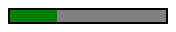

The ::-webkit-progress-inner-element CSS pseudo-element represents the outermost container of the {{HTMLElement("progress")}} element. It is the parent of the {{cssxref("::-webkit-progress-bar")}} pseudo-element.
Note: In order to let ::-webkit-progress-value take effect, {{cssxref("appearance")}} needs to be set to none on the <progress> element.
::-webkit-progress-inner-element
These examples work only on Blink and WebKit.
In this example, a 2px black border is added around the progress bar.
<progress value="10" max="50">
progress {
-webkit-appearance: none;
}
::-webkit-progress-inner-element {
border: 2px solid black;
}
{{EmbedLiveSample("Adding_a_black_border_around_the_progress_bar", 200, 50)}}
If you're not using a Blink or WebKit browser, the above code results in a progress bar looking like this:

Not part of any standard.
{{Compat}}